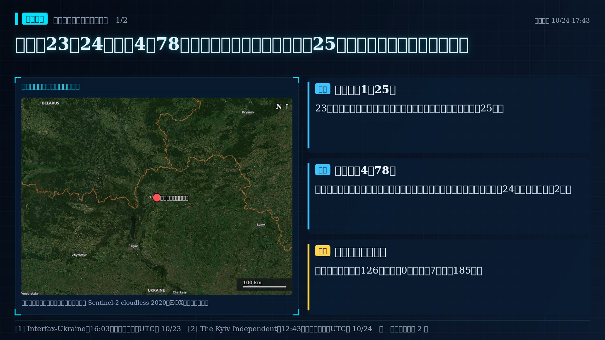
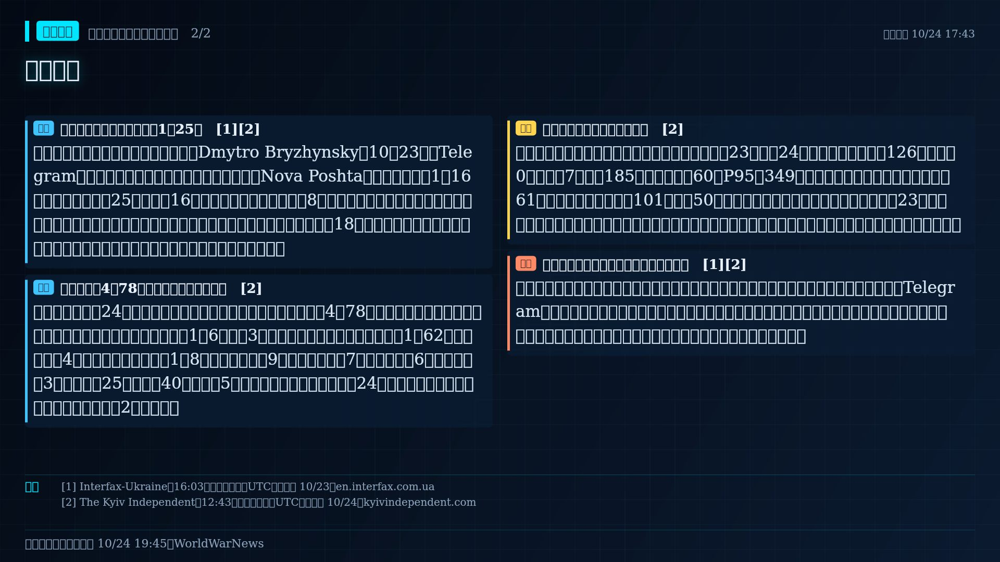
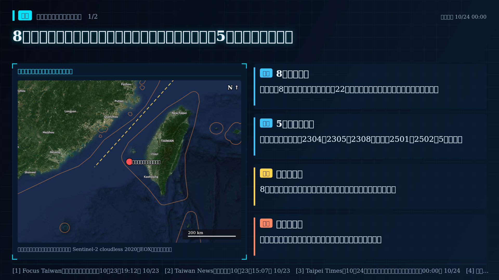
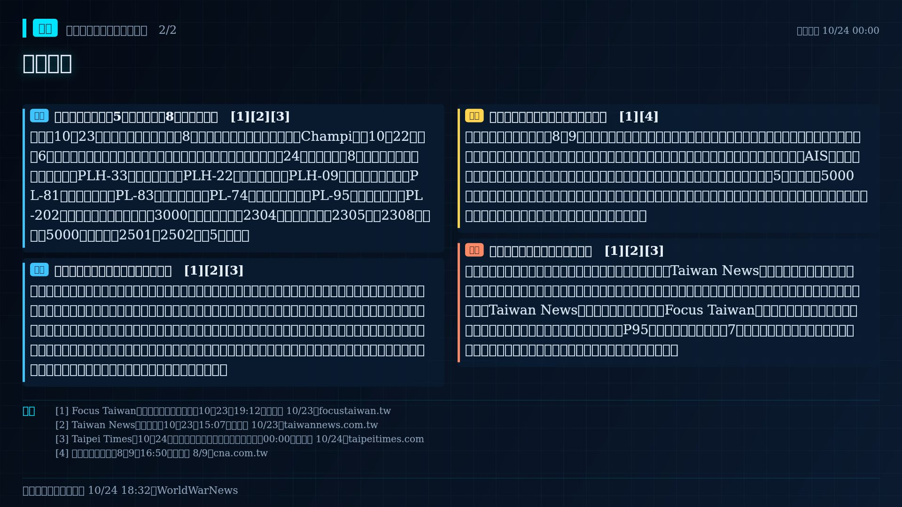
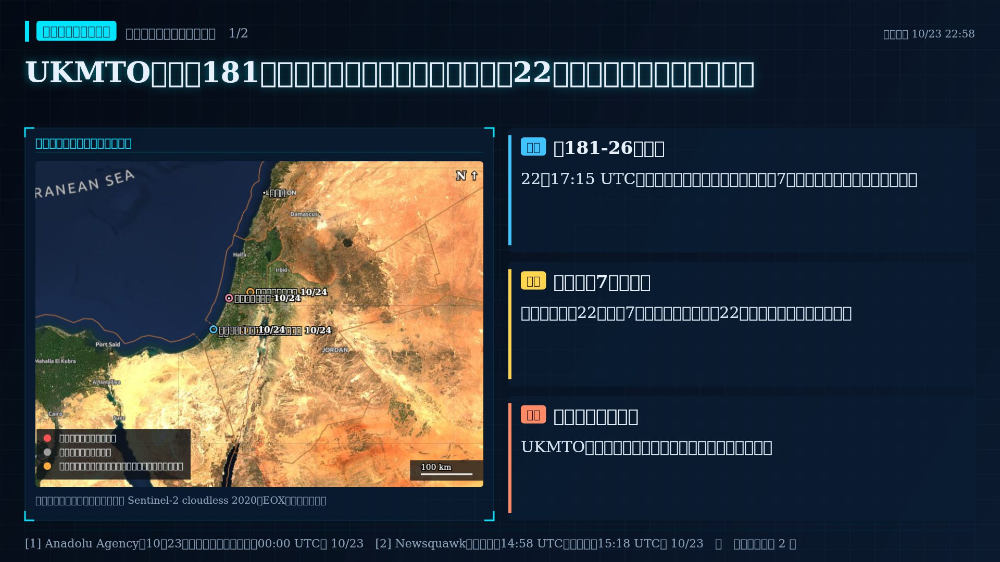
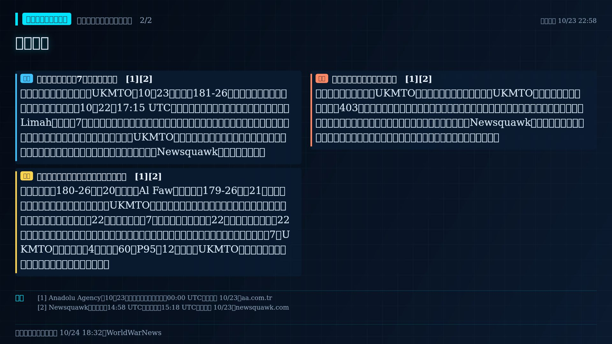
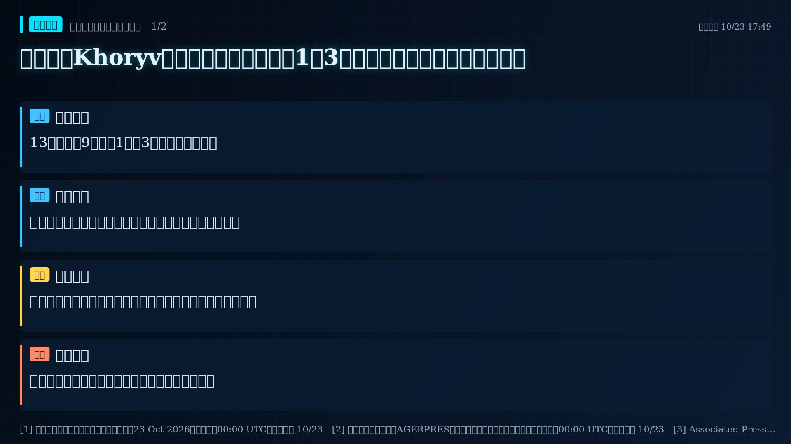
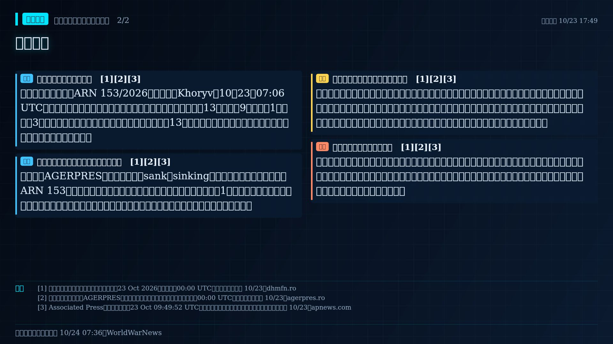
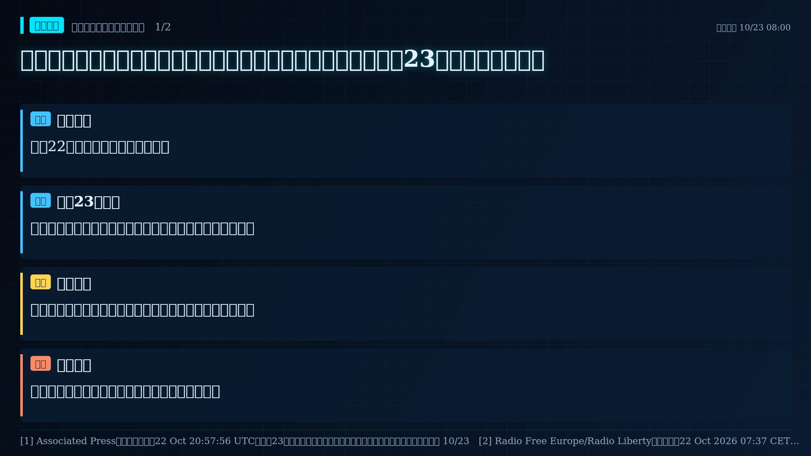
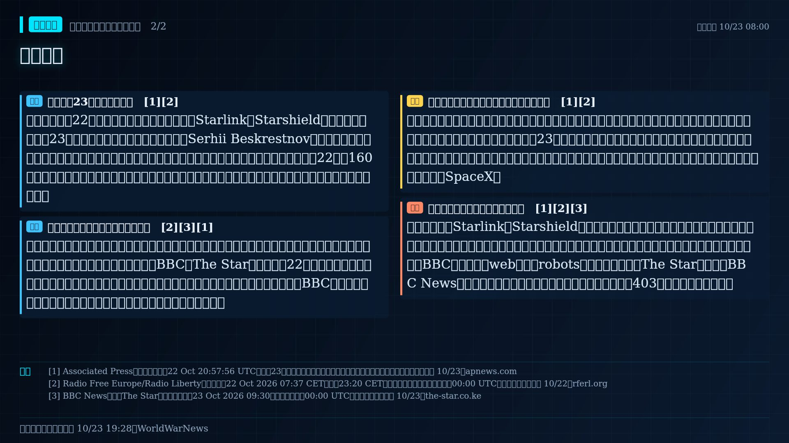

📌 10/25（日）每日摘要｜台海 2 級升溫：中國進入緊急或戰時體制、民防醫療備戰或戰略物資收｜美伊 2 級升溫：國際原子能總署報告、安理會表決等國際組織行動｜歐洲北約 3 級高度警戒：波蘭／羅馬尼亞／波羅的海國家領空遭侵犯｜烏俄 2 級升溫：能源設施遭打擊比例上升｜朝鮮半島 2 級升溫｜南海 2 級升溫：中菲海上衝突｜以巴紅海 3 級高度警戒：胡塞攻擊紅海／亞丁灣船隻。降溫訊號：美伊、烏俄。市場無異常波動。
今日焦點
近 72 小時最重要的事件（依事件類型與報導量排序）。
撤僑或旅遊警示升級
各國撤離僑民或提高旅遊警示，往往早於軍事行動出現。
報導標題：US-Israel-Iran War Latest Live News: India Issues Travel Advisory as 4,000 Umrah Pilgrims Remain Stranded in Saudi Arabi 來源 ↗
中菲海上衝突
中國海警以水砲、衝撞或雷射對菲律賓船隻施壓；美菲共同防禦條約可能被拿出來討論。
報導標題：2 Philippine aircraft collide midair during training: 4 pilots killed; 5th major midair collision this year 來源 ↗
軍事・外交・政治
🛡️ 軍事（近 7 天 8 則）
中菲海上衝突
中國海警以水砲、衝撞或雷射對菲律賓船隻施壓；美菲共同防禦條約可能被拿出來討論。
報導標題：2 Philippine aircraft collide midair during training: 4 pilots killed; 5th major midair collision this year 來源 ↗
以色列跨境空襲
打擊黎巴嫩、敘利亞、伊拉克或葉門目標，衝突有擴大到多國的風險。
報導標題：Migrant workers find strength in each other amid Israeli strikes in Lebanon 來源 ↗
燈號上升
本站預警燈號升級。
報導標題：由第 3 級升至第 4 級「危機」
胡塞攻擊船隻
紅海與亞丁灣航運受威脅，會推高歐亞運費、保費與油價。
報導標題：Oil Prices Jump After Houthi Strikes and Iranian Shipping Attacks 來源 ↗
以色列跨境空襲
打擊黎巴嫩、敘利亞、伊拉克或葉門目標，衝突有擴大到多國的風險。
報導標題：US-Israel-Iran War Latest News: Israeli Strikes and Artillery Shelling Intensify in Southern Lebanon as Ground Operation 來源 ↗
北約戰機升空或機場關閉
北約國家為因應俄國攻擊而緊急升空或關閉機場，代表前線緊張升高。
報導標題：NATO fighter jets scrambled as 'horror attack' launched over Latvia 來源 ↗
燈號上升
本站預警燈號升級。
報導標題：由第 1 級升至第 2 級「升溫」
🏛️ 外交（近 7 天 8 則）
降溫訊號
衝突雙方通話、會談或停火協商，可能讓緊張暫緩（不會降低燈號）。
報導標題：Abu Dhabi or Switzerland: reporters have learned where Ukraine-US-russia talks might take place 來源 ↗
降溫訊號
衝突雙方通話、會談或停火協商，可能讓緊張暫緩（不會降低燈號）。
報導標題：Insurance Broker Marsh Meets US Officials on Restoring Gulf Maritime Trade Amid Iran War 來源 ↗
新制裁
新一輪制裁或出口管制，反映外交施壓升級。
報導標題：Executive Order Implements, and Immediately Waives, New Graham Act Sanctions and Tariffs Targeting Russia 來源 ↗
降溫訊號
衝突雙方通話、會談或停火協商，可能讓緊張暫緩（不會降低燈號）。
報導標題：Kremlin confirms Oleshky ceasefire, says working with Ukraine on evacuation timing 來源 ↗
航空公司停飛
航空公司暫停飛往衝突地區，代表民間評估風險升高。
報導標題：All Four Moscow Airports Halt Flights Amid Reports of Drones Approaching the Capital 來源 ↗
降溫訊號
衝突雙方通話、會談或停火協商，可能讓緊張暫緩（不會降低燈號）。
報導標題：U.S. Senate candidate Adam Hamilton talks Iran War, tariffs in Kansas 來源 ↗
新制裁
新一輪制裁或出口管制，反映外交施壓升級。
報導標題：EU imposes largest-ever sanctions on Russia over Ukraine war | Tap to know more | Inshorts 來源 ↗
📜 政治（近 7 天 8 則）
歐洲備戰
歐洲各國增加國防預算、恢復徵兵或發放民防手冊，反映對俄威脅的評估升高。
報導標題：DEADLOCK IN STOCKHOLM Sweden’s Next Government Will Decide Who Pays for Rearmament — and Which Allied Forces It Hosts 來源 ↗
戰略物資收儲或經濟管制
大量收儲糧食與能源、限制出口或資本管制，可能是為制裁或戰爭預作準備。
報導標題：Iran's Shadow Fleet Oil Stockpiles Run Dry as U.S. Blockade Wipes Out $24.9 Billion in Revenue 來源 ↗
歐洲備戰
歐洲各國增加國防預算、恢復徵兵或發放民防手冊，反映對俄威脅的評估升高。
報導標題：Europe’s Rearmament is Fuelling Revolt on its Streets, Says Richard Wolff 來源 ↗
對台軍售或涉台法案
美國批准軍售或通過涉台法案；中方常在之後以軍演回應。
報導標題：President Trump has yet to approve $14 billion Taiwan arms sale — The Japan Times 來源 ↗
戰略物資收儲或經濟管制
大量收儲糧食與能源、限制出口或資本管制，可能是為制裁或戰爭預作準備。
報導標題：China export ban hits tungsten, crucial metal for defence, industry 來源 ↗
各國動向
🇨🇳 中國軍事 1・外交 1・政治 5
戰略物資收儲或經濟管制
大量收儲糧食與能源、限制出口或資本管制，可能是為制裁或戰爭預作準備。
報導標題：China export ban hits tungsten, crucial metal for defence, industry 來源 ↗
另有 4 則，見時間軸
🇺🇸 美國軍事 2・外交 14・政治 1
降溫訊號
衝突雙方通話、會談或停火協商，可能讓緊張暫緩（不會降低燈號）。
報導標題：Insurance Broker Marsh Meets US Officials on Restoring Gulf Maritime Trade Amid Iran War 來源 ↗
降溫訊號
衝突雙方通話、會談或停火協商，可能讓緊張暫緩（不會降低燈號）。
報導標題：U.S. Senate candidate Adam Hamilton talks Iran War, tariffs in Kansas 來源 ↗
撤僑或旅遊警示升級
各國撤離僑民或提高旅遊警示，往往早於軍事行動出現。
報導標題：US-Israel-Iran War Latest Live News: India Issues Travel Advisory as 4,000 Umrah Pilgrims Remain Stranded in Saudi Arabi 來源 ↗
以色列跨境空襲
打擊黎巴嫩、敘利亞、伊拉克或葉門目標，衝突有擴大到多國的風險。
報導標題：US-Israel-Iran War Latest News: Israeli Strikes and Artillery Shelling Intensify in Southern Lebanon as Ground Operation 來源 ↗
另有 14 則，見時間軸
🇷🇺 俄羅斯軍事 1・外交 10
新制裁
新一輪制裁或出口管制，反映外交施壓升級。
報導標題：Executive Order Implements, and Immediately Waives, New Graham Act Sanctions and Tariffs Targeting Russia 來源 ↗
降溫訊號
衝突雙方通話、會談或停火協商，可能讓緊張暫緩（不會降低燈號）。
報導標題：Kremlin confirms Oleshky ceasefire, says working with Ukraine on evacuation timing 來源 ↗
航空公司停飛
航空公司暫停飛往衝突地區，代表民間評估風險升高。
報導標題：All Four Moscow Airports Halt Flights Amid Reports of Drones Approaching the Capital 來源 ↗
新制裁
新一輪制裁或出口管制，反映外交施壓升級。
報導標題：Norway Tightens Russia Sanctions as Naftogaz Pursues Asset Seizures. 來源 ↗
另有 7 則，見時間軸
🇺🇦 烏克蘭軍事 1・外交 2
降溫訊號
衝突雙方通話、會談或停火協商，可能讓緊張暫緩（不會降低燈號）。
報導標題：Abu Dhabi or Switzerland: reporters have learned where Ukraine-US-russia talks might take place 來源 ↗
新制裁
新一輪制裁或出口管制，反映外交施壓升級。
報導標題：Ukraine’s Zelenskyy criticizes President Trump’s decision to suspend new sanctions on Russia 來源 ↗
北約東翼領空遭侵犯
俄國無人機或飛彈越界進入北約國家，北約需判斷是否回應。
報導標題：Ukraine apologizes after a suspected drone crashes in Lithuania, damaging a moving car. 來源 ↗
🇰🇵 北韓軍事 2
🇰🇷 南韓軍事 1・外交 1
🇯🇵 日本
🇵🇭 菲律賓軍事 1・外交 1
🇮🇷 伊朗軍事 1・外交 5・政治 1
胡塞攻擊船隻
紅海與亞丁灣航運受威脅，會推高歐亞運費、保費與油價。
報導標題：Oil Prices Jump After Houthi Strikes and Iranian Shipping Attacks 來源 ↗
戰略物資收儲或經濟管制
大量收儲糧食與能源、限制出口或資本管制，可能是為制裁或戰爭預作準備。
報導標題：Iran's Shadow Fleet Oil Stockpiles Run Dry as U.S. Blockade Wipes Out $24.9 Billion in Revenue 來源 ↗
另有 3 則，見時間軸
🇮🇱 以色列軍事 6
以色列跨境空襲
打擊黎巴嫩、敘利亞、伊拉克或葉門目標，衝突有擴大到多國的風險。
報導標題：Migrant workers find strength in each other amid Israeli strikes in Lebanon 來源 ↗
以色列跨境空襲
打擊黎巴嫩、敘利亞、伊拉克或葉門目標，衝突有擴大到多國的風險。
報導標題：Israel launches air strikes, demolitions across southern Lebanon 來源 ↗
以色列跨境空襲
打擊黎巴嫩、敘利亞、伊拉克或葉門目標，衝突有擴大到多國的風險。
報導標題：IDF reports strike on Hezbollah truck in southern Lebanon — Jerusalem Post 來源 ↗
另有 2 則，見時間軸
🇪🇺 歐盟與歐洲軍事 3・外交 5・政治 5
歐洲備戰
歐洲各國增加國防預算、恢復徵兵或發放民防手冊，反映對俄威脅的評估升高。
報導標題：DEADLOCK IN STOCKHOLM Sweden’s Next Government Will Decide Who Pays for Rearmament — and Which Allied Forces It Hosts 來源 ↗
新制裁
新一輪制裁或出口管制，反映外交施壓升級。
報導標題：EU imposes largest-ever sanctions on Russia over Ukraine war | Tap to know more | Inshorts 來源 ↗
另有 9 則，見時間軸
重點情資
烏克蘭23至24日遭襲4死78傷：車尼希夫物流站白天遇襲25傷，基輔奧博隆住宅中無人機
- 23日白天俄軍攻擊車尼希夫北部新郵政物流站，市府稱傷者增至25人。
- 死者在車尼希夫、克拉馬托斯克、斯拉維揚斯克與聶伯城；基輔奧博隆住宅24日凌晨中無人機2傷。
- 烏方稱夜間無人機126架、飛彈0枚，低於7日日均185架。
完整內容、圖卡與來源


報導新進展｜車尼希夫白天遇襲1死25傷
車尼希夫市軍事行政長官布里任斯基（Dmytro Bryzhynsky）10月23日在Telegram表示，俄軍白天攻擊該市北部一處新郵政（Nova Poshta）物流站，初報1死16傷，之後傷者增至25人，其中16人由救護人員在現場處置、8人送醫；設施受損，一度擔心有人受困瓦礫下。車尼希夫市議會稱兩家私人企業遭鎖定。州級官員另報傷者18人，數字與市府不同，顯示統計口徑或更新時點有差異。來源未明確說明使用的武器。
報導全國｜一日4死78傷，基輔奧博隆住宅起火
《基輔獨立報》24日彙整各地官方通報：過去一日俄軍攻擊共造成4死78傷。死者分別在車尼希夫、克拉馬托斯克（檢方稱住宅區遭砲擊1死6傷，含3名兒童）、斯拉維揚斯克（市長稱1名62歲婦女身亡、4傷）與聶伯城（州長稱1死8傷）。日托米爾9傷、哈爾科夫州7傷、赫爾松州6傷、敖德薩州3傷、蘇米州25個聚落遭40次攻擊共5傷。基輔市軍事行政當局稱，24日凌晨一架無人機擊中奧博隆區住宅，造成2傷並起火。
研判比對｜夜間規模低於近期均值
依烏克蘭空軍公布、本站官方數據頁收錄的數字，23日晚至24日晨俄軍發射無人機126架、飛彈0枚，低於7日日均185架，也遠低於60日P95的349架；《基輔獨立報》轉述空軍稱其中61架為噴射動力型，擊落101架（含50架噴射型）。值得注意的是，傷亡多集中在23日白天的攻擊，而非夜間大規模空襲，車尼希夫物流設施遇襲屬此類。以上數字均為烏方公布，未經獨立核實。
待證限制｜傷亡持續更新、未讀到空軍原貼文
車尼希夫傷者人數市府與州府說法不同，後續可能再調整。本輪未能以工具讀到烏克蘭空軍Telegram原貼文全文，夜間無人機數字取自本站官方數據與《基輔獨立報》轉述。各地傷亡均來自烏方地方官員，俄方未就個別攻擊回應；本稿不推論攻擊目的或戰線變化。
- [1] Interfax-Ukraine（16:03基輔時間，換算UTC）｜發布 10/23
- [2] The Kyiv Independent（12:43基輔時間，換算UTC）｜發布 10/24
阿聯證實油輪漏油污染烏姆蓋萬海岸：全線海灘暫封，國際海事機構指向10月遇襲的Gem No.2
- 阿聯環境部23日證實油輪漏油波及烏姆蓋萬海灘，全線海灘暫封，沙迦也關閉哈姆利耶海灘。
- 國際海事機構指認肇事船為10月9至10日遇襲的Gem No.2，官方未點名。
- 若指認屬實，波斯灣航運攻擊的影響已延伸到沿岸環境與漁業。
完整內容、圖卡與來源


報導新進展｜阿聯氣候變遷與環境部證實油輪漏油上岸
阿聯氣候變遷與環境部10月23日清晨證實，其技術監測與環境評估系統偵測到一起油輪漏油，已波及烏姆蓋萬（Umm Al Quwain）海灘；部方表示沙迦、阿治曼與烏姆蓋萬居民近日聞到的燃油氣味「對健康沒有風險」，但呼籲民眾遠離上岸油污。烏姆蓋萬全部海灘與沿岸區域暫時關閉，直到技術團隊完成評估；沙迦23日下午也預防性關閉哈姆利耶（Al Hamriya）海灘，漁民被要求避開受影響海域。部方稱圍堵、隔離、清理與復原作業已與地方及聯邦機關協同展開，海岸調查仍在進行，以確認漏油完整範圍。部方聲明沒有點名船舶，也沒有說明漏油原因。
報導來源｜國際海事機構與媒體指向Gem No.2
《The National》報導，國際海事機構指認肇事船為長330公尺的超大型油輪Gem No.2，該船10月9至10日疑遭伊朗無人機攻擊，船上22名印度籍船員全數獲救；報導引述歐洲太空總署10月21日的雷達影像，顯示油污自距烏姆蓋萬海岸約25公里的油輪處外洩。《Maritime Executive》則稱Windward AI於週二（20日）在烏姆蓋萬外約16英里偵測到油污，並引述未具名報告稱污染已延伸逾22英里、面積逾60平方英里，另稱該船為巴拿馬籍、台灣船東所有。這些面積數字與船東資訊未獲阿聯官方證實，本站也未取得原始衛星影像。
研判研判｜海上襲擊的後果開始外溢到海岸
本站23日稿曾提到哈姆利耶海灘因油輪漏油暫封，但當時查無官方證實，未與任何遇襲事件連結；本輪阿聯官方已證實漏油並封閉海岸，屬實質新進展。值得注意的是，若媒體所稱肇事船確為10月上旬遇襲船，代表波斯灣航運攻擊的影響已從船舶損害延伸到沿岸環境、漁業與民生，且在遇襲近兩週後才上岸，海上受損船舶可能持續構成風險。同期伊朗聲稱在海峽及波灣打擊多艘船舶、美國中央司令部否認海峽有水雷，雙方說法均未經獨立證實，本稿不據此推定漏油成因。
待證限制｜肇事船、成因與範圍仍未由官方確認
阿聯官方未公布船名與成因；Gem No.2的指認來自媒體轉述的國際海事機構，並非官方聲明，本稿列為待證。污染面積與延伸距離各來源說法不一，官方仍在評估。安納杜魯社與沙迦24的報導均轉述同一份部方聲明，與部方X貼文同屬一源，不構成多個獨立觀測。比對說明：本站官方與量測數據沒有海岸漏油相關項目；UKMTO近7天灣區遇襲通報4件，低於60日P95的12件，但UKMTO曾表示多數遇襲船不回報；布蘭特原油最近交易日上漲3.1%，未達異常門檻，與《Maritime Executive》所稱油價創5月以來新高並不矛盾。漏油本身不在這些指標的量測範圍內。
- [1] 阿聯氣候變遷與環境部X帳號（僅知10月23日，時刻記為00:00 UTC）｜發布 10/23
- [2] The National（22日刊出，23日14:13更新；時區未標示）｜發布 10/23
- [3] Anadolu Agency（10月23日，僅知日期，時刻記為00:00 UTC）｜發布 10/23
- [4] The Maritime Executive（時間戳16:29:47，時區未標示，暫記為UTC）｜發布 10/24
8艘日本海保船避颱至澎湖七美西南海域，海巡署稱遭5艘中國海警船尾隨
- 日本海保8艘巡視船為避颱風尚比，22日沿台海中線航行至七美島西南、鄰接區外。
- 海巡署稱中國海警派2304、2305、2308及岱山級2501、2502共5艘跟隨。
- 8月颱風白海豚期間也有類似事件；本次跟隨船數與噸位較具體。
完整內容、圖卡與來源


報導新進展｜海巡署：5艘海警船跟隨8艘日本巡視船
海巡署10月23日表示，日本海上保安廳8艘巡視船為躲避颱風「尚比」（Champi），10月22日上午6時起沿台灣海峽中線航行，抵達澎湖七美島西南方海域，位置在我國24浬鄰接區外。8艘包括可載直升機的「黎明」（PLH-33）、「八島」（PLH-22）、「琉球」（PLH-09），以及「竹富」（PL-81）、「川平」（PL-83）、「松島」（PL-74）、「伊良部」（PL-95）、「大隅」（PL-202）。海巡署稱中國海警派出3000噸級「白塔」（2304）、「秀山」（2305）、2308號，以及5000噸級岱山級2501、2502號共5艘跟隨。
報導台方立場｜反對藉颱風營造管轄假象
據中央社，海巡署聲明稱日方是「來台避颱」，呼籲中方本於人道互助精神協助，勿藉颱風營造對海峽擁有管轄權的假象；《台北時報》轉述海巡署說法，稱中方作為是把台海「內海化」的一環，並援引《聯合國海洋法公約》指日船有權通行海峽的國際水域。海巡署副署長謝慶欽向中央社表示，日船航線與颱風路徑相反，對駐沖繩的海保船而言，前往台灣海峽是最佳避颱路線；海巡署以情監偵系統持續監控，自身艦艇也在避颱，必要時可出動。截至報導時，中國外交部、國台辦與日本政府均未見公開回應。
研判背景與意義｜同類事件第二次公開化
這不是今年首例。中央社8月9日報導，日本海保巡視船躲避颱風「白海豚」時疑遭中國海警監控；當時海委會副主委宋承恩稱避難不應政治化，並列出外國公務船避風須有真實需要、事畢即離、不損台灣安全、AIS表明目的等條件，海巡署則稱外船未進入鄰接區、已隨颱風離開。兩次相比，本次跟隨的海警船達5艘、含兩艘5000噸級船，規模較具體。值得注意的是，海警跟隨外國公務船，可能是中方以「執法存在」強化海峽管轄主張的作法，但中方本次並未說明意圖，本稿不把它認定為事實。
待證限制｜單一來源、航向描述不一
所有船名、數量與位置都出自海巡署同一份說法，中央社、Taiwan News（引自由時報）與《台北時報》屬轉述，不是獨立觀測；本輪未找到日本海上保安廳或中國海警的對應公告。各報對航向說法不同：《台北時報》與Taiwan News寫日船沿中線「南下」，Focus Taiwan英文稿寫「北上」，本稿僅寫「沿中線航行」。國防部本輪官方數據沒有逾P95的共機或共艦觀測、近7日無聯合戰備警巡與具名演習，本事件屬海警與海保之間，不在國防部每日共機艦統計範圍內。
- [1] Focus Taiwan（中央社英文，台北時間10月23日19:12）｜發布 10/23
- [2] Taiwan News（台北時間10月23日15:07）｜發布 10/23
- [3] Taipei Times（10月24日頭版，僅知日期，時間記為台北當日00:00）｜發布 10/24
- [4] 中央社（台北時間8月9日16:50）｜發布 8/9
UKMTO遲報第181號：荷莫茲海峽阿曼利馬外海油輪22日遭不明彈體擊中，仍續航
- 22日17:15 UTC，一艘出海油輪在阿曼利馬東北約7海里遭不明彈體擊中，仍續航。
- 伊朗宣稱的是22日前夜7船遇襲，本案發生於22日傍晚，時地均無法對應。
- UKMTO未公布船名、傷亡與損害，也未指認攻擊者。
完整內容、圖卡與來源


報導新進展｜利馬東北7海里油輪遭擊中
英國海事貿易行動辦公室（UKMTO）10月23日發布第181-26號警報，稱收到船公司保全主管的延遲通報：10月22日17:15 UTC，一艘駛出荷莫茲海峽的油輪，在阿曼利馬（Limah）東北約7海里處遭不明彈體擊中，該油輪「得以繼續航行至下一個停靠港」。通報未公布船名、旗籍、船東、人員傷亡與損害程度；UKMTO稱主管機關正在調查，籲通過該海域的船舶謹慎航行並回報可疑活動。土耳其安納杜魯新聞社與Newsquawk均據此警報報導。
研判脈絡｜與先前兩份通報及伊方宣稱的關係
這是本站繼第180-26號（20日伊拉克Al Faw外海）與第179-26號（21日阿曼布哈外海）之後，再追蹤到的第三份UKMTO油輪遇襲警報，地點同樣位於阿曼穆桑代姆半島一側的出海航段。伊朗革命衛隊22日曾聲稱一夜有7船遇襲，但伊方所述是22日前夜，本案發生在22日傍晚，時間與地點都不能直接對應，不應把本案當成伊方宣稱的佐證。本站官方數據顯示，近7天UKMTO灣區遇襲通報4件，低於60日P95的12件；不過UKMTO曾表示多數遇襲船舶不回報，實際件數可能被低估。
待證限制｜單一通報、攻擊方未明
兩份來源都轉述同一份UKMTO警報，不構成兩次獨立觀測；UKMTO官網本輪以工具讀取時回傳403，未能直接核對警報全文。警報未指認攻擊者或彈種，本稿不歸責。油輪可續航只代表當時未失去航行能力，不能據此判定損害輕微或航道狀況。Newsquawk另提到沙迦哈姆利耶海灘因油輪漏油暫時封閉，但頁面未與本案連結，本稿不將兩者合併。
- [1] Anadolu Agency（10月23日，僅知日期，時刻記為00:00 UTC）｜發布 10/23
- [2] Newsquawk（即時快訊14:58 UTC，署名時間15:18 UTC）｜發布 10/23
黑海商船Khoryv在羅馬尼亞外海翻覆：1死3失蹤，官方最新航警稱船仍漂浮
- 13名船員中9獲救、1死、3失蹤，搜救持續。
- 官方最新航警稱翻覆仍漂浮，與媒體『沉沒』標題不同。
- 羅馬尼亞海圖局已發布航行危險警報，事故海域須注意搜救。
完整內容、圖卡與來源


報導新事件｜商船翻覆與搜救
羅馬尼亞海圖局航警ARN 153/2026記錄，商船Khoryv於10月23日07:06 UTC在康斯坦察外海翻覆。羅馬尼亞海事當局經國家通訊社通報，13名船員中9人獲救、1人死亡、3人失蹤；搜救仍在進行。事故位置約在康斯坦察外13海里、羅馬尼亞領海之外。這是已發生的海上救援與航行危險事件。
報導狀態更正｜翻覆仍漂浮，勿直接寫沉沒
美聯社及AGERPRES英文標題使用『sank／sinking』，但羅馬尼亞海圖局較新的ARN 153明確稱船以翻覆狀態仍漂浮，並要求附近船舶與其保持至少1海里距離、留意落水者。因此目前以官方航警的船體狀態為準；後續是否完全沉沒，須等新航警或搜救機關確認。
研判區域影響｜航運安全與歸責需分開
羅馬尼亞總統稱商船遭無人機攻擊並把事件置於俄烏戰爭升級脈絡；此為總統公開說法。航警本身證實船體翻覆與三人失蹤，沒有提供彈體鑑識或無人機操作者證據。對港口外商船與救援隊而言，當下確定的影響是搜救及航行危險；不能從事故位置推論攻擊來源、北約遭攻擊或周邊戰線有變。
待證查核界線｜影像與最終人數
傷亡及船體狀態可能隨搜救更新，須追蹤羅馬尼亞海事當局與後續航警。公開影片屬羅馬尼亞內政部拍攝，不是衛星影像；未取得符合本次事故產品編號、實際拍攝時間、品質與事件海域足跡的衛星產品，因此不展示衛星判讀或攻擊軌跡。
俄烏同意奧萊什基局部人道停火；白宮與雙方官員所述開始日期相差兩天
- 俄烏同意為奧萊什基開展局部人道停火與撤離。
- 白宮稱29日開始；烏俄官員稱27日，兩天差異尚未釐清。
- 追蹤排雷、救援車隊與平民自願撤離是否實際進行。
完整內容、圖卡與來源


報導新進展｜俄占城鎮的人道任務
美國白宮10月23日宣布，俄羅斯與烏克蘭同意在赫爾松州俄軍占領的奧萊什基（Oleshky）局部停火，讓人道物資進入並安排平民撤離。美聯社直接採訪烏方談判代表、人權監察員盧比涅茨；報導亦引述俄軍總參謀長與俄方人權官員確認安排。這是預定的局部人道措施，尚不是已生效停火或全線停戰。
報導日期差異｜27日或29日須再核對
白宮官方文字寫停火10月29日開始；盧比涅茨向美聯社稱10月27日星期二開始、任務兩日後展開。俄軍總參謀長稱27日莫斯科時間凌晨4時在赫爾松方向停火；路透報導也採27日。公開說法可與先期排雷、29日啟動物資與撤離的分階段安排相容，但白宮原文直接把29日稱作『停火開始』，因此不能代替當事方確認或自行消除這兩天差異。
研判影響｜先看安全通道能否落地
奧萊什基隔第聶伯河與烏方控制的赫爾松市相望，長期面臨食物、醫藥、用水與地雷障礙。白宮估城內約1700至2000人，但承認自2022年無正式人口清查。局部停火能否改善平民處境，取決於排雷、車隊安全、物資抵達與自願撤離是否真的發生；協議本身不代表戰線移動，也不足以推論更廣泛和平談判會成功。
待證查核界線｜尚未驗證執行結果
目前無公開協議全文或獨立停火監督紀錄；撤離者目的地與確切適用範圍仍待確認。本稿核對的是23日公開聲明與採訪，並未把預計日期寫成已實現的救援。沒有符合本事件位置、拍攝時間、產品編號與可判讀品質的衛星影像，故不以舊影像推算通道、部隊位置或地面控制線。
烏克蘭軍用衛星通訊是否恢復仍有分歧：美方稱解除限制，烏方23日稱未見全面恢復
- 川普22日稱衛星通訊服務已恢復。
- 總統顧問稱尚未看到全面解除限制；部分單位有速度改善。
- 服務範圍、解除時間與決策者仍無可獨立複核的完整資料。
完整內容、圖卡與來源


報導新進展｜23日仍有相反說法
美國總統川普22日稱，馬斯克已把烏克蘭使用的Starlink／Starshield服務恢復；但美聯社23日更新的完整正文引烏克蘭總統顧問Serhii Beskrestnov稱，尚未看到速度限制解除的跡象，只有少數設備偶爾超過原先限制。美聯社引一名不具名歐洲官員稱，22日約160公里／小時的上限仍在。這些是不同時間、不同觀察範圍的說法，不能據此斷言所有終端已恢復或都仍受限。
報導交叉查核｜部分改善不等於全面解除
自由歐洲電台／自由電台直接採訪一名烏克蘭官員，對方稱部分單位連線速度提高，但未普遍適用；烏克蘭駐美代辦較早表示限制尚未解除。BBC在The Star公開轉載的22日較早採訪中記錄，澤倫斯基稱軍用服務尚未完全恢復至其所需速度，並等候美國國務卿盧比歐回覆。BBC與美聯社報導同一組美烏公開表態，不把兩者當作獨立的全網路測速。
研判軍事與外交影響｜先確認服務狀態及決策鏈
烏軍倚賴衛星通訊支援無人機與指揮聯絡，因此終端使用限制即使只影響部分任務，也會形成需要釐清的可靠度風險。川普稱服務恢復與烏方23日仍報限制的落差，顯示正式服務狀態、覆蓋單位及解除時點尚待美烏與業者共同確認。美國國會議員要求調查誰下令、何時生效；現有公開資料不足以歸責白宮、五角大廈或SpaceX。
待證證據界線｜衛星通訊不是衛星影像
本稿討論的是Starlink／Starshield通訊服務，並非衛星拍攝到的戰場照片。公開報導未提供可複核的逐終端連線紀錄、完整地理分布或服務商正式技術公告，也無法量化由限制直接造成的戰損。BBC原站於本輪web查閱受robots限制，本稿只讀到The Star明確標示BBC News署名的公開轉載全文；美國參議員官網原聲明則回傳403，未冒稱核對其全文。
關鍵數據
📈 市場訊號
| 布蘭特原油 | 116.72 | +3.1% | |
| WTI 原油 | 103.27 | +3.8% | |
| 歐洲天然氣 TTF | 93.85 | +4.2% | |
| 台股加權指數 | 46,041 | -1.8% | |
| 台積電 | 2,385 | +0.0% | |
| 美元兌新台幣 | 32.570 | -0.1% | |
| 黃金 | 4,008 | -1.3% | |
| VIX 恐慌指數 | 19.5 | +2.2% |
橘色＝往風險方向變動（油價、天然氣、黃金、美元兌新台幣上漲，台股下跌）；⚠️＝超過 3 個標準差或固定門檻。資料：Yahoo Finance，可能延遲。不構成投資建議。
🚢 美軍航艦位置
- 西太平洋 0 艘
- 中東海域 2 艘 George Washington、 George H.W. Bush
- 歐洲海域 0 艘
- 其他海域 2 艘 Theodore Roosevelt、 Abraham Lincoln
資料：USNI News 艦隊追蹤（2026-09-28）｜週報已超過 10 天未更新，僅供參考；概略位置。
期刊導讀
兩岸邦交爭奪戰：關鍵在政治，不只是金錢外交
The China-Taiwan Diplomatic War Is More About Politics Than Economics｜Henry Large、Garrett M. Wright
作者比較台灣在非洲與拉丁美洲的邦交史，主張各國承認台灣與否，最終取決於政治槓桿而非單純的「金錢外交」。非洲方面，1971 年聯大 2758 號決議後邦交大量流失，布吉納法索 2018 年斷交；史瓦帝尼因君主體制維持邦交，賴清德總統雖遭北京施壓他國撤銷飛越許可，仍於次月成行；索馬利蘭則因同處未獲普遍承認的處境而與台灣深化合作。拉美方面，瓜地馬拉因高度依賴美國市場與僑匯而有親美誘因，巴拉圭則與長期執政的紅黨關係深厚，但兩國反對派都曾被北京拉攏或承諾轉向。作者結論是台灣難以在經濟上與中國比拚，但可善用小國、分離政體與特殊政治情勢爭取空間。
對台灣的意義：文章點出巴拉圭與瓜地馬拉即將到來的選舉是邦交風險點，也說明美國政策（如台北法案）對維繫邦交的作用；台灣外交資源可更聚焦於政治誘因而非單純援助金額。
本站中文導讀，非全文翻譯｜已讀全文
習近平整肅軍方，讓美國嚇阻更顯迫切
Xi’s Military Purges Make US Deterrence More Urgent｜Raja Krishnamoorthi
作者指出，2022年選出的中央軍委七人中僅剩習近平與一名將領在職，張又俠、劉振立已被開除；引用CSIS統計，2022年以來的47名上將級軍官有41人遭整肅或疑似整肅。整肅雖可能削弱解放軍短期作戰準備，卻讓攻台或封鎖的決定更集中於習一人，增加不可預測性。作者主張美方應做三件事：不要在五角大廈製造人事動盪、結束伊朗戰爭並補充被消耗的攔截飛彈庫存（引用國會預算局評估）、維持美中軍事溝通管道，以穩定可信的嚇阻因應。
對台灣的意義：文章直接把解放軍高層整肅與台海風險連結，並點出美軍在中東消耗的攔截飛彈短期難以補足，可能影響台海衝突時的美方支援能力，是評估嚇阻可信度的重要參考。
本站中文導讀，非全文翻譯｜已讀全文
南海行為準則：只簽協議還不夠
South China Sea Code of Conduct: A Deal Is Not Enough｜Abdul Rahman Yaacob
東協輪值主席菲律賓暗示與中國的南海行為準則即將談成，作者認為重點不在簽署，而在能否改變海上行為。若準則只重申對話與自制，將與既有的《南海各方行為宣言》無異；應納入事件通報、諮商與違規處理程序，並定期檢討。作者也警告中方可能藉準則限制東協國家與域外國家的聯合軍演或防衛合作，主張應區分防止海上事故的措施與限制正當防衛合作的條款，保住東南亞國家的戰略自主。
對台灣的意義：台灣占有太平島但不在準則談判桌上；若準則限制域外國家軍演或合作，可能壓縮美日澳在南海的活動空間，影響台灣周邊海域安全與海運航道。
本站中文導讀，非全文翻譯｜已讀全文
更多：警戒走勢、戰區海報與戰場圖、週報
警戒走勢
每日最高警戒等級（09/30–10/25）
台海共機架次（國防部每日通報，近 30 筆）
表格
| 日期 | 共機架次 |
|---|---|
| 10/21 | 29 |
| 10/20 | 14 |
| 10/19 | 5 |
| 10/18 | 2 |
| 10/17 | 9 |
| 10/16 | 8 |
| 10/15 | 15 |
| 10/14 | 9 |
| 10/13 | 5 |
| 10/12 | 4 |
| 10/11 | 12 |
| 10/10 | 21 |
| 10/9 | 2 |
| 10/8 | 3 |
| 10/7 | 14 |
| 10/3 | 5 |
| 10/2 | 6 |
| 10/1 | 23 |
| 9/30 | 9 |
| 9/29 | 3 |
| 9/28 | 3 |
| 9/27 | 2 |
| 9/26 | 5 |
| 9/25 | 2 |
| 9/24 | 10 |
| 9/23 | 10 |
| 9/22 | 4 |
| 9/21 | 4 |
| 9/20 | 5 |
| 9/19 | 20 |
虛線為過去 60 天的第 95 百分位，超過即觸發預警指標；單日偏高常見於聯合戰備警巡，不代表戰爭即將發生。
全球重點

戰區海報與戰場圖


國防部 10/24 通報（前 24 小時）：共機 未提供 架次、共艦 1 艘、公務船 5 艘。國防部未公布共機精確位置，圖上不標航跡。日本統合幕僚監部近 7 天公布中國艦艇／軍機動向 8 則。雷達衛星（Global Fishing Watch）最近過境：澎湖周邊 25 艘（未開 AIS 8）、海峽中段 320 艘。預警第 2 級 升溫，觸發：中國進入緊急或戰時體制、民防醫療備戰或戰略物資收儲、艦隊動態、台股、台積電或新台幣單日異常下跌，或外資單日淨賣超異常等。


預警第 2 級 升溫。近 14 天沒有附座標的已覆核事件；圖上空心點是記者整理提及的地點，不是查核過的事件位置。


UKMTO 通報（台北時間）：近 30 天波灣／荷莫茲／阿曼灣船舶遇襲 33 件，近 7 天 4 件；最新為 10/23 Strait of Hormuz（UKMTO #181）。預警第 2 級 升溫，觸發：核查警訊、撤僑、使館人員撤離或旅遊警示升級。


預警第 3 級 高度警戒，觸發：領空遭侵犯、軍方應變升級。近期事件：10/18 立陶宛國防部長接受LRT Radio訪問稱，18日上午不明飛行物進入立陶宛空域，…；10/18 Reuters直接引述北約官員確認，18日兩架義大利Eurofighter在北約…；10/17 羅馬尼亞國防部第336及337號公告稱，17日當地晚間兩架無人機先後進入Suli…。近 14 天沒有附座標的已覆核事件；圖上空心點是記者整理提及的地點，不是查核過的事件位置。


預警第 3 級 高度警戒，觸發：胡塞攻擊紅海／亞丁灣船隻、撤僑、使館人員撤離或旅遊警示升級。研究稿（10/23）：英國海事貿易行動辦公室（UKMTO）10月23日發布第181-26號警報，稱收到船公司保全主管的延遲通報：10月22日17:15 UTC，一艘駛出荷莫茲海峽的油輪，在阿曼利馬（Limah）東北約7海里處遭不明彈體擊中，該…近 14 天沒有附座標的已覆核事件；圖上空心點是記者整理提及的地點，不是查核過的事件位置。


預警第 2 級 升溫，觸發：中菲海上衝突。近 14 天沒有附座標的已覆核事件，圖上只標地名；沒有資料不代表局勢平靜。


10/14→10/23 DeepState 更新：俄軍推進 8 處（Rai-Oleksandrivka、Matyasheve、Svitle、Novyi Donbas等），烏軍收復 0 處。本圖範圍控制區比較：俄方新增約 27 km²、烏方收復約 0 km²（像素估算）。烏克蘭空軍通報 10/24 無人機 126、飛彈 0（烏方數字）。預警第 2 級 升溫，觸發：能源設施遇襲、新制裁或航空公司停飛。
10/24 烏克蘭空軍通報：無人機 126 架、飛彈 0 枚；7 日日均 185（交戰方公布數字）。
戰場圖控制區資料：DeepStateMap.live（烏克蘭團隊依公開資料整理，非獨立證實；依其授權附出處使用）。另可對照 ISW 每日評估。
每週週報

交戰方數字為其自稱。「政府投降」「國家戰敗」一類訊息一律是假訊息。本站為個人整理，非官方資訊。